The people who carried learning across the end of the ancient world: who compressed it, copied it, argued with it and explained it to their students. Portraits, translations and concordances.
Each shown as the Middle Ages drew them. Where no picture of a writer survives, a miniature from a manuscript of their work stands in.
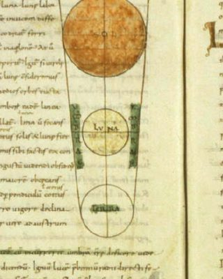
Translated the first part of Plato's Timaeus into Latin and wrote a long commentary on it. For about seven hundred years it was nearly all of Plato the Latin West could read: the world-soul, the elements and the harmonies of creation all came through him.
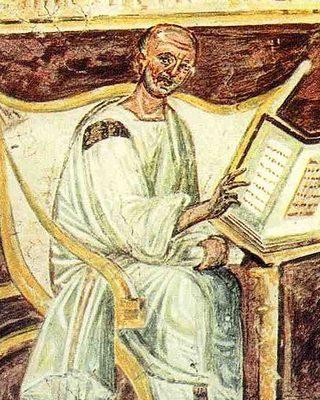
Bishop of Hippo in North Africa. Argued that Christians could take what was useful from pagan learning, as the Israelites took the gold of Egypt. Began a set of books on the liberal arts; only the one on music survives.
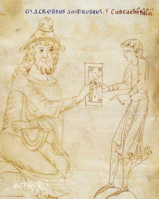
A Roman official who wrote for his son. His commentary on Cicero's Dream of Scipio taught the Middle Ages the spheres and their music, the five zones of the earth and the five kinds of dream. His Saturnalia is a dinner party about Virgil and old Rome.
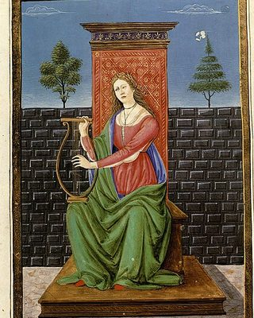
A North African who turned the liberal arts into a wedding: seven bridesmaids, each delivering a lecture. Strange, ornate and copied for a thousand years.
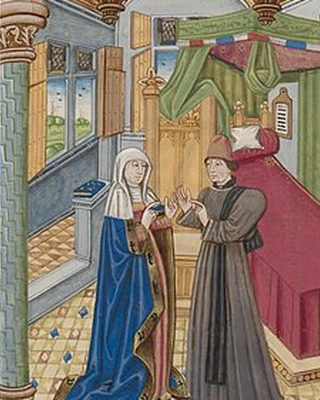
Translated Greek logic and mathematics into Latin, named the four mathematical arts the quadruvium, and wrote the Consolation of Philosophy in prison before his execution.
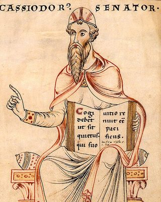
A statesman of the Gothic court whose official letters are monuments of ornate Latin. In retirement he founded Vivarium and made the copying of books a monastic duty.
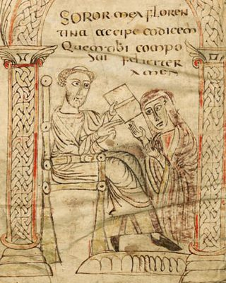
Compressed the knowledge of antiquity into the Etymologiae, explaining everything through the origins of words. The medieval reference book.
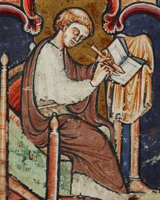
A monk of Jarrow in Northumbria who put the arts to work: figures of speech for reading scripture, astronomy for finding the date of Easter. His histories made it common to count years from the birth of Christ.
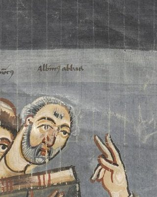
Charlemagne's schoolmaster. Taught grammar, rhetoric and dialectic as dialogues between master and pupil.
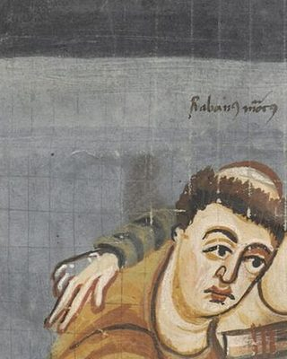
Alcuin’s pupil, later abbot of Fulda and archbishop of Mainz, remembered as the teacher of Germany. Wrote a handbook for training clergy and an encyclopedia built on Isidore.
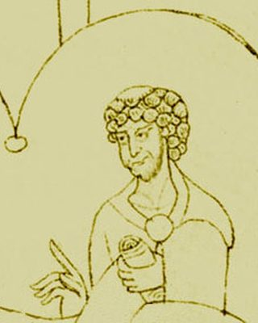
An Irish philosopher at the court of Charles the Bald, rare in the West for reading Greek. Wrote notes on Martianus that later teachers built on.
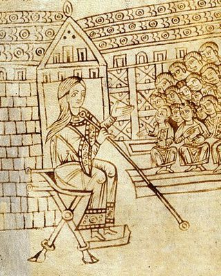
A schoolmaster who compiled commentaries on some twenty texts. For three centuries, readers met Martianus with Remigius's notes in the margin.
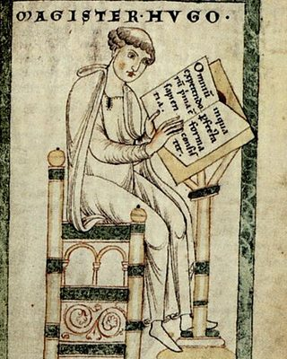
Rebuilt the map of knowledge in the Didascalicon, adding mechanical arts beside the liberal ones.
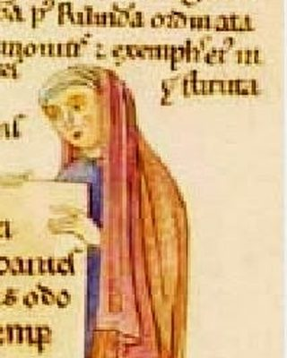
An abbess who compiled the Hortus deliciarum for her nuns, including a famous drawing of Philosophy enthroned among the seven arts.
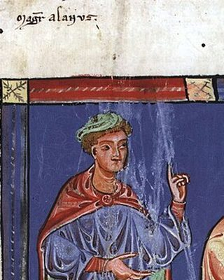
A Paris master called the universal doctor. In his poem Anticlaudianus, the seven arts build a chariot to carry Prudence up to heaven.
All twenty books of Isidore recast as verse chapters by guilds of AI models. A reimagining, not a translation.
A new English translation of Martianus Capella, book by book.
A concordance of the seven liberal arts: how each art was defined and taught from Martianus to Hugh of St Victor, sentence by sentence.
Martianus in one column, Remigius of Auxerre's commentary in the other, as a ninth-century student would have read it.

.jpg){kind=link}


.jpg){kind=link}
_BnF_Lat_13_396.jpg){kind=link}
.png){kind=link}